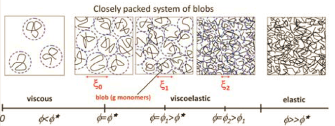
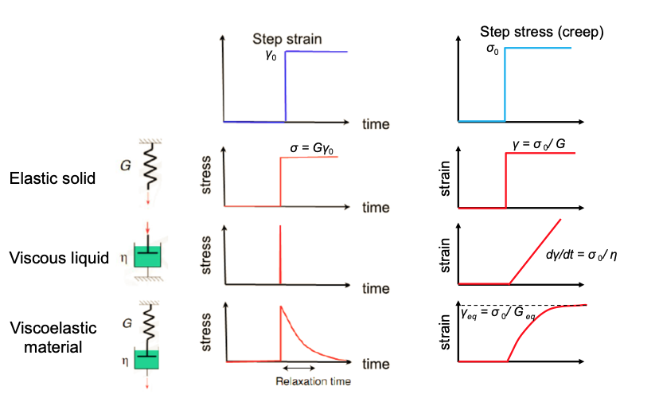
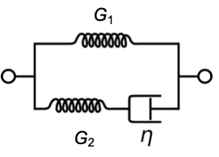

Viscoelasticity
Contents
This page was generated from notebooks/L23/2_Viscoelasticity.ipynb.

Viscoelasticity#
Viscoelsatic behavior is a mixture of viscous behavior, which we know already from simple liquids and elastic behavior, which is typical for solids. Yet, this mixture is not just a simple superposition but often quite complex and depdning on the way mechanical deformation is introduced.
insert sketch
As already previously introduced, we can define a shear stress
as the tangential force \(F\) to an area \(A\). As a response to such a stress, the material deforms and the deformation is called shear strain
which corresponds directly to the angle in the above sketch as long as the displacement is small. Within this description all parts of the sample experience the same shear stress and strain if the material is uniform.
A perfectly elastic solid would give a very simple relation between stress and strain, i.e.
where \(G\) is the shear modulus. This corresponds to Hooke’s law of elasticity, which is valid for small deformations or small strain. In case of a simple liquid with a dynamic viscosity \(\eta\), a constant strain leads to a zero shear stress. The liquid flow in response to the deformation and all flows have dissipated the initial deformation due to the internal friction of the liquid. Thus for liquids and viscous dissipation the shear rate may be of larger importance
A constant stress in the liquid thus needs a constant strain rate such that
The response of an elastic or viscous material to stepwise introduced stress or strain is therefore different and helps o classify the mechanical material response.
Accoding to this picture, and
elastic solid responds with a step stress to a step strain, but also with a step strain to a step stress
viscous liquid responds with a spike in the stress to a step strain and a linear strain to the step stress
viscoelastic material responds with an (exponential) decay to a stepp strain and an (exponential) increase to a limiting value to a step stress
Viscoelasstic materials are thus materials that exhibit both viscous and elastic responses under applied mechanical stress and strain. As these responses are time dependent, viscoeleastic materials may show elastic behavior on short timescales but liquid on long timescales. Viscoelastic solids will always reach non-zero values for stress or strain after a certain amount of time, while for a viscoelastic material, the stress always decays to zero but the strain is able to grow without bounds.
Models for Viscoelastic behavior#
Maxwell Model#
A model for a viscoelastic liquid is the Maxwell model being a serial combination of a spring and a dashpot (viscous element).

Kelvin-Voigt#
The Kelvin-Voigt model is a parallel combination of both elements and can grasp some features of a viscoelastic solid. It can however not describe the behavior for step strain.

Standard Model#
A better model for visoelastic solids is the standard linear solid model comprising three mechanical elements.
[ ]: